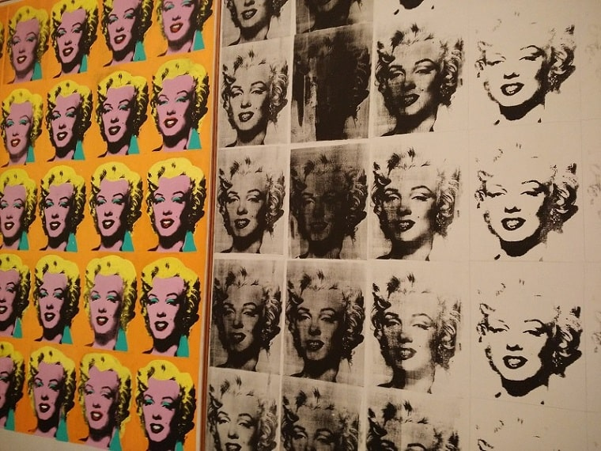
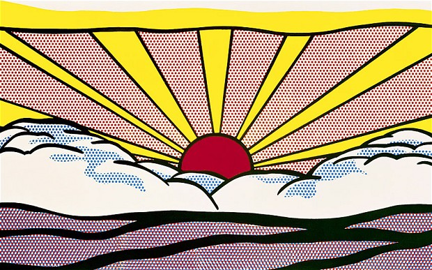
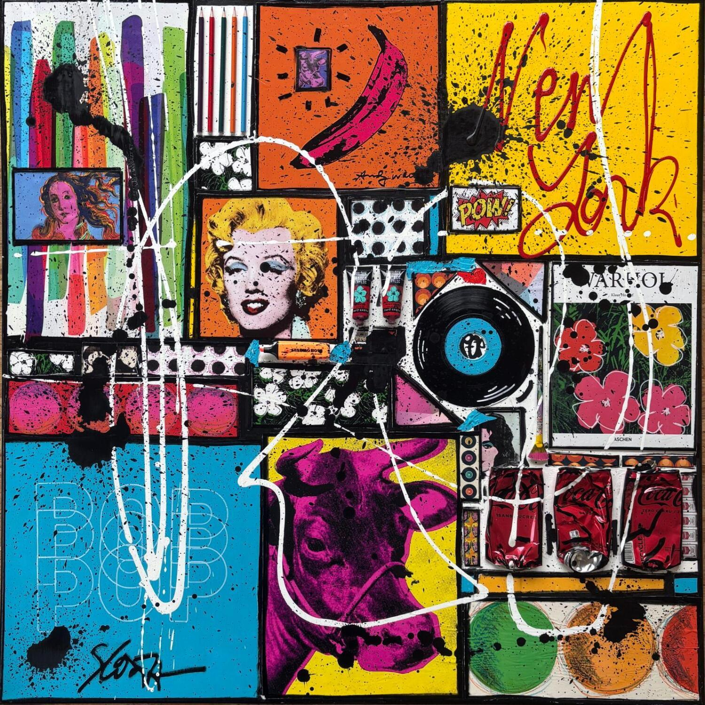
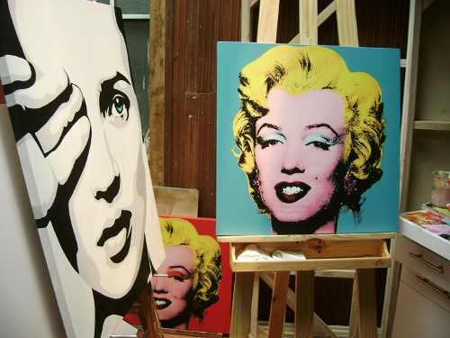
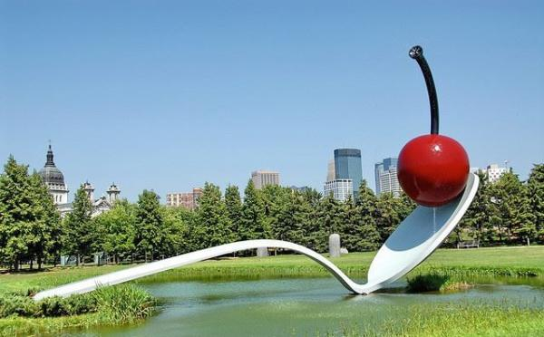

Permite imprimir colores en capas y crear múltiples variaciones de una misma imagen. Andy Warhol la popularizó.

Patrón de puntos pequeños que genera tonos continuos desde lejos. Fue muy usada por Roy Lichtenstein.

Combina fotografías, publicidad, recortes y objetos encontrados para transformar lo cotidiano en arte.

Usa pigmentos brillantes sobre lienzo para lograr colores saturados y superficies uniformes.

Claes Oldenburg transformó objetos comunes en esculturas gigantes, muchas veces hechas con materiales blandos.
La misma imagen se repite muchas veces, como en la producción industrial.
Objetos cotidianos llevados a tamaños enormes para generar impacto visual.
Superficies de color uniforme, sin degradados ni sombras.
Líneas gruesas que delimitan formas, tomadas del cómic y la impresión.
Contraste entre elementos de alta cultura y cultura popular.
Uso de fotos públicas como base para obras pintadas o serigrafiadas.